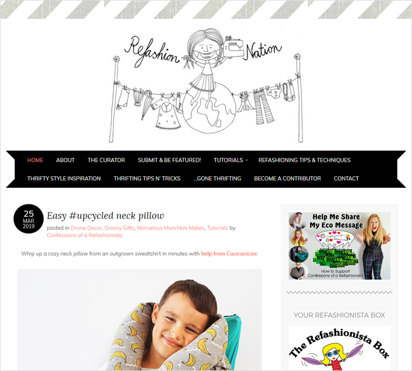

Remodel
How to Reuse Remodel And Recycle At a tight budget
Cassity does her DIY projects to reduce, reuse, recycling, and to remodel at a tight budget. Most of her DIY she does it herself and also gets contributions from her followers meaning we always have new DIY to try. Cassity mostly focuses on DIY around home decor and food recipes. The best thing about this site is most of her DIYs are easy to follow.
Remodelaholic Blog Website
 Cassity
Cassity

Decor
How to create your style by Genève
A Pair & a Spare is a DIY site showing how to create your style by Genève. This personal blog focuses on home decor, recipes traveling tips, styling ideas, and fashion which is contributed by Genève herself and allows contribution from the community too. What caught my attention on this site is the free wardrobe rehab book which is sure most people will like.
A Pair & a Spare Blog Website
 Genève
Genève

Food
Make kitchen space change the look of your home
Fall for DIY by Francesca keeps her readers glued to her site with a flow of ideas on food (see: my best food blogs), office, parties, decor, fashion all of which are easy and affordable that will make the surrounding more presentable. She inspires readers with affordable and easy to create ideas that can transform a space.
Fall for DIY Blog Website
Francesca

Remodel
How to make your cosmetic at home
Katie Wells in her blog talks mostly to moms (seee The Best Mom Blogs to follow) on everything to do with health (see: Best Awesome & Amazing Health Blogs.) She speaks of how you can make your cosmetic at home with available resources. Katie Wells's goal is to have ideas on almost everything to do with health like a food recipe, beauty, natural remedies to certain medical complications and general hygiene making our life much more easier.
Wellness Mama Blog Website
 Katie Wells
Katie Wells

Decor
How to create beautiful and affordable furniture
Shanty 2 Chic is a blog founded by Ashley and Whitney. Ashley and Whitney are two sisters who came up with this blog to help create beautiful and affordable furniture and turn a house into a happy home.They post their decor and design journeys.
Shanty 2 Chic Blog Website
Ashley and Whitney

Decor
How to renovates old into new
Like the name suggests Mandi renovates old into new. She focuses on home decor mostly. She shows how she does it herself and gives easy to follow steps to guide you. Mandi gives her followers a chance to get to post their unique DIY too. You can find the Vintage Revivals page here.
Vintage Revivals Blog Website
Mandi

Decor
How to deal with furniture refurbishing
Katie, the founder of Addicted 2 DIY, believes in going for DIY ideas if you are working on a project that might take longer to achieve since with it you spend less or nothing at all and get the best and unique results.What I liked about her blog are her excellent free printable plans that are easy to follow with cheap material that can occupy less space. Katie encourages you to eat and sleep DIY.
Addicted 2 DIY Blog Website
Katie
Food
Erica Domesek's Fashion, Recipe, Decor, and Beauty Advice
The author Erica Domesek writes about fashion, recipe, decor, and beauty advice (see: Best Beauty Blogs.) She encourages readers to handcraft their own and get their preference and color choice. The blog P.S. - I made this has unique videos with easy to follow steps. Erica always makes sure that all her DIYs posts have easy guides making it easy for the readers to try them at home.
P.S. - I made this
Erica Domesek

Remodel
How to look great without spending a lot
Refashioning Nation from the name itself is all about fashion (see: Best Fashion Blogs.) Sheri, the author, focuses on refurbishing your looks from boring old to new and fabulous with available resources. Am sure we will all want to look great without spending a lot.
Refashion Nation Blog Website
Sheri